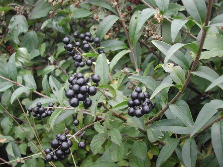
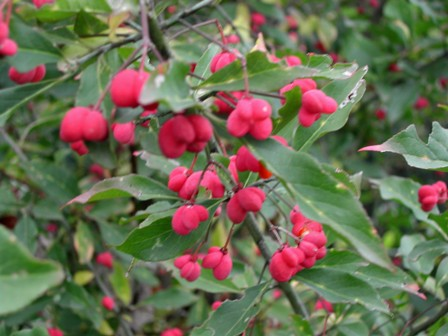

Per chi abita in una campagna montana, la natura è prodiga di sorprese quando le si vogliono cogliere.
Mi trovo vicino a casa, ai limiti del bosco, due pianticelle arbustive di cui non conosco il nome... ma cosa cercare con San Google?
Occorre pur avere un indizio... quindi per ora buio assoluto!
Ecco le fotografie dei frutti, maturi in questo periodo autunnale.
Quelli rossi sono tri-quadrilobati (il termine non è corretto ma non ne trovo uno migliore), di un bellissimo colore che rendono i rametti elegantissimi e decorativi.
Quelli neri suno uniti in grappolini; ogni bacca è abbastanza succosa ma discretamente dura.


Chissà quante notizie ci saranno in rete... ma trovarle! Ma sicuramente qualcuno mi suggerirà...